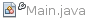
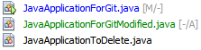

Apache NetBeans
Apache NetBeansLatest release
在 NetBeans IDE 中使用 Mercurial 支持
| This tutorial needs a review. You can open a JIRA issue, or edit it in GitHub following these contribution guidelines. |
NetBeans IDE 支持 Mercurial 版本控制客户端 1.0.x 及更高版本。通过利用 IDE 的 Mercurial 支持，您可以在 IDE 内从项目中直接执行版本控制任务。本文档通过指导您完成使用版本控制软件的标准工作流，介绍了如何在 IDE 中执行基本的版本控制任务。
IDE 的 Mercurial 支持类似于 IDE 的 Subversion 支持。主要区别在于，Mercurial 是一个分布式修订版本控制系统。通常，用户首先_克隆_要使用的外部资源库。此克隆内容是资源库（包含修订历史记录）的完整副本。您可以根据需要反复克隆此本地副本，并且在准备好时将本地所做的更改推回原始资源库（如果您具有权限），或者_导出_所做的更改，然后将其发送给资源库所有者（如果您没有权限）。
目录

Figure 1. 此页上的内容适用于 NetBeans IDE 8.0
要求
要学完本教程，您需要具备以下软件和资源。
| 软件或资源 | 要求的版本 |
|---|---|
版本 8.0 |
|
Java 开发工具包 (JDK) |
版本 7 或 8 |
1.04 或更高版本 |
设置 Mercurial
在系统中安装 Mercurial 客户端软件后，才能使用 IDE 的 Mercurial 支持。IDE 支持 Mercurial 客户端版本 1.04 和更高版本。IDE 的 Mercurial 支持是通过使用与 Mercurial 命令行界面相同的命令实现的。
通过 Mercurial 网站，可以下载 Mercurial 源文件或二进制软件包。
在 IDE 中设置 Mercurial 可执行文件的路径：
-
从主菜单中选择
Tools（工具）>Options（选项）；在 OS X 上为NetBeans>Preferences（首选项）。"Options"（选项）对话框打开。 -
选择对话框顶部的 "Team"（团队开发）图标，然后单击 "Versioning"（版本控制）标签。在 "Versioning Systems"（版本控制系统）下方的左窗格中，选择 "Mercurial"。对话框的主窗口中将显示 Mercurial 的用户定义选项：

-
在 "Mercurial Executable Path"（Mercurial 可执行文件路径）文本字段中，输入可执行文件的路径，或者单击 "Browse"（浏览）在系统中找到它。请注意，您不需要将 Mercurial 可执行文件_包含_在路径中。
-
单击 "OK"（确定）。
设置 Mercurial 客户端之后，您可以通过 IDE 的 Team （团队开发）> Mercurial 菜单运行 Mercurial 命令。要克隆外部 Mercurial 资源库，请选择 Team （团队开发）> Mercurial > Clone Other （克隆其他）。在克隆过程中，IDE 将自动导入克隆文件的所有历史记录和状态信息。
如果您目前拥有 Mercurial 资源库，则 IDE 会自动将在 IDE 项目中打开的文件或在 "Favorites"（收藏夹）窗口中添加的文件标识为版本控制文件。可以通过 Mercurial 菜单对这些文件使用 Mercurial 命令，也可以采用右键单击文件或文件夹，然后从 Mercurial 上下文菜单中进行选择的方法。
要使用命令行在计算机上创建 Mercurial 资源库，请键入以下内容：
hg clone /path/to/your/repository| NetBeans Mercurial 资源库 (http://hg.netbeans.org/) 在本教程中用于演示目的。 |
将本地文件与资源库保持同步
使用版本控制系统时，可以这样操作：将本地文件与资源库保持同步，再对本地副本进行更改，然后将其提交到该资源库。下表介绍了在 NetBeans IDE 中同步项目所能使用的各种方法，这取决于您的具体情况：
在 IDE 中打开 Mercurial 项目
如果您已拥有 Mercurial 版本控制项目，并且已在 IDE 之外使用该项目，则可在 IDE 中将其打开，版本控制功能将自动变为可用。IDE 将扫描打开的项目和文件状态，并为 Mercurial 版本控制项目自动激活上下文相关支持。
从资源库中检出文件
如果要通过 IDE 与远程资源库相连，请检出并立即开始使用文件，具体操作如下：
-
在 NetBeans IDE 中，从主菜单中选择
Team（团队开发）>Mercurial>Clone other（克隆其他）。此时将打开克隆向导。
IDE 的下拉菜单是与上下文相关的，即可用选项取决于当前选定的项。因此，如果已在使用 Mercurial 项目，则可以从主菜单中选择 Team （团队开发）> Remote （远程）> Clone Other （克隆其他）。
|
-
在 "Repository URL"（资源库 URL）中，输入资源库的路径（例如
http://hg.netbeans.org/main）。 -
在克隆向导显示的 "User"（用户）和 "Password"（口令）字段中，输入 netbeans.org 用户名和口令。

-
如果要使用代理，请务必单击 "Proxy Configuration"（代理配置）按钮，然后在 "Options"（选项）对话框中输入所有必要的信息。如果确定资源库的连接设置正确无误，请单击 "Next"（下一步）。
-
在第二步中，单击 "Default Push Path"（默认推入路径）字段右侧的 "Change"（更改）。"Change Push Path"（更改推入路径）对话框打开。

-
添加 NetBeans 用户名和口令，并将协议更改为
https，以修改默认推入项。 -
单击 "Set Path"（设置路径）。此时将关闭 "Change Push Path"（更改推入路径）对话框。
-
单击 "Next"（下一步）以转到该向导的第三步。
-
在 "Parent Directory"（父目录）字段中，输入计算机上要将资源库文件检出到的位置（此外，也可以使用 "Browse"（浏览）按钮）。

如果运行的是 Windows，请留意指定的路径长度；即 C:\Documents and Settings\myName\My Documents\NetBeans\etc\etc ，克隆可能会因文件路径过长而失败。请试着改用 C:\ 。
|
-
将 "Scan for NetBeans Projects after Checkout"（在检出后扫描 Netbeans 项目）选项保持选中状态，然后单击 "Finish"（完成），以启动检出操作。 IDE 将检出选定的源，并且 IDE 的状态栏会显示将文件从资源库下载到本地工作目录的进度。您还可以在 "Output"（输出）窗口（在 Windows 上按 Ctrl-4 组合键；在 OS X 上按 Command-4 组合键）中查看正要检出的文件。
| 如果检出的源中包含 NetBeans 项目，则将显示一个对话框，提示您在 IDE 中将其打开。如果源中不包含项目，也将显示该对话框，提示您创建基于这些源的新项目，然后在 IDE 中将其打开。如果为这类源创建新项目，请选择相应的项目类别（位于新建项目向导中），然后使用该类别中的 "With Existing Sources"（基于现有源）选项。 |
将文件导入资源库中
此外，也可以将已在 IDE 中处理的项目导入远程资源库中，然后对该项目执行同步操作，再在 IDE 中继续进行处理。
| 事实上，从系统中_导出_文件时，可在版本控制系统中使用术语 "import" 表明文件正_导入_资源库中。 |
将项目导入资源库中：
-
在 "Projects"（项目）窗口（在 Windows 上按 Ctrl-1 组合键；在 OS X 上按 Command-1 组合键）中，选择未进行版本控制的项目，然后从节点的右键单击菜单中选择
Team（团队开发）>Mercurial>Initialize Repository（初始化资源库）。此时将打开 "Repository root path"（资源库根路径）对话框。

-
在资源库中指定用来放置项目的资源库文件夹。默认情况下，建议您在 "Root Path"（根路径）文本字段中，键入包含项目名称的文件夹。
-
单击 "OK"（确定）以启动 Mercurial 初始化操作。 单击 "OK"（确定）后，IDE 会将项目文件上载到资源库。 选择 "Window"（窗口）> "Output"（输出）以打开 "Output"（输出）窗口并查看进度。

对项目文件进行 Mercurial 版本控制后，这些文件在资源库中将注册为 Locally New （本地新建）。要查看这些新文件及其状态，可以对其右键单击，然后从弹出式菜单中选择 Mercurial > Show changes （显示更改）。
|

-
右键单击项目，然后从弹出式菜单中选择
Mercurial>Commit（提交），以便将这些项目文件提交到 Mercurial 资源库中。此时将打开 "Commit - [ProjectName]"（提交 - [项目名称]）对话框。

-
在 "Commit Message"（提交消息）文本区域中键入消息，然后单击 "Commit"（提交）。
提交的文件连同 .hg 目录一起放在 Mercurial 资源库目录中。IDE 的 "Output"（输出）窗口（在 Windows 上按 Ctrl-4 组合键；在 OS X 上按 Command-4 组合键）中提供了详细提交信息。
|
编辑源
在 IDE 中打开 Mercurial 版本控制项目之后，即可开始对源进行更改。与 NetBeans IDE 中打开的任何项目一样，在 IDE 窗口（例如“项目”（在 Windows 上按 Ctrl-1 组合键；在 OS X 上按 Command-1 组合键）、“文件”（在 Windows 上按 Ctrl-2 组合键；在 OS X 上按 Command-2 组合键）或“收藏夹”（在 Windows 上按 Ctrl-3 组合键；在 OS X 上按 Command-3 组合键）窗口）中显示文件时，您可以双击文件节点，在源代码编辑器中打开文件。
在 IDE 中的处理源时，您需要处理各种 UI 组件，这有助于查看和操作版本控制命令：
在源代码编辑器中查看更改
如果在 IDE 的源代码编辑器中打开版本控制文件，则对照资源库中以前检出的基本版本对文件进行修改时，可以查看对该文件进行的实时更改。您在操作时，IDE 通过源代码编辑器旁注中的颜色编码传递了以下信息：
| 蓝色 ( ) | 表示自早期修订版本以来更改的行。 |
|---|---|
绿色 ( ) |
表示自早期修订版本以来添加的行。 |
红色 ( ) |
表示自早期修订版本以来删除的行。 |
源代码编辑器左旁注逐行显示发生的更改。当修改给定行时，所做更改会立即在左旁注中显示出来。
您可以单击旁注中的颜色组以调用版本控制命令。例如，单击红色图标（指明从本地副本中删除了行）时，左下方的屏幕快照会显示可用的窗口部件。
源代码编辑器右旁注提供了对文件所做的更改的整体视图，从上到下显示。更改文件之后，将会立即生成颜色编码。
注：单击旁注的特定点可以让内联光标立即转到文件中的该位置。想要查看受影响行的行号，可以将鼠标放在右旁注中的彩色图标上：
[.feature] — image::images/left-ui-small.png[role="left", link="images/left-ui.png"] — 左旁注 |
[.feature] — image::images/right-ui-small.png[role="left", link="images/right-ui.png"] — 右旁注 |
查看文件状态信息
在使用 "Projects"（项目）（在 Windows 上按 Ctrl-1 组合键；在 OS X 上按 Command-1 组合键）、"Files"（文件）（在 Windows 上按 Ctrl-2 组合键；在 OS X 上按 Command-2 组合键）或 "Favorites"（收藏夹）（在 Windows 上按 Ctrl-3 组合键；在 OS X 上按 Command-3 组合键）或 "Versioning"（版本控制）窗口时，IDE 将提供一些可视化功能以帮助查看文件状态信息。在下面的示例中，请注意标记（例如， ）、文件名颜色和相邻状态标签如何全都彼此一致，以向您提供一种简单而有效的方法来跟踪文件的版本控制信息：
）、文件名颜色和相邻状态标签如何全都彼此一致，以向您提供一种简单而有效的方法来跟踪文件的版本控制信息：
| 状态标签以文本的形式指示 "Versioning"（版本控制）、"Projects"（项目）和 "Files"（文件）窗口中的文件状态。要显示状态标签，请从主工具栏中选择 "View"（视图）> "Show Versioning Labels"（显示版本控制标签）。 |
标记、颜色编码、文件状态标签和最重要的 "Versioning"（版本控制）窗口都有助于在 IDE 中有效地查看和管理版本控制信息。
标记和颜色编码
标记应用于项目、文件夹、包节点，通知您包含在该节点中的文件状态：
下表显示了用于标记的颜色方案：
| UI 组件 | 描述 |
|---|---|
蓝色标记 ( |
指示存在已在本地修改、添加或删除的文件。对于包，此标记仅应用于包本身，而不应用于它的子包。对于项目或文件夹，此标记指示其中的更改，或指示其所包含子文件夹中的任何更改。 |
红色标记 ( |
标记包含_冲突_文件（即与资源库中保留的版本冲突的本地版本）的项目、文件夹或包。对于包，此标记仅应用于包本身，而不应用于它的子包。对于项目或文件夹，此标记指示其中的冲突，或指示其所包含子文件夹中的任何冲突。 |
颜色编码应用于文件名，以指示它们相对于资源库的当前状态：
| 颜色 | 示例 | 描述 |
|---|---|---|
蓝色 |
|
表示在本地修改了文件。 |
绿色 |
|
表示在本地添加了文件。 |
红色 |
|
表示文件中包含本地工作副本与资源库中版本之间的冲突。 |
灰色 |
 |
表示文件被 Mercurial 忽略，并且不包含在版本控制命令（如 "Update"（更新）和 "Commit"（提交））中。如果文件没有进行版本化，那么它们只能被忽略。 |
删除线 |
|
表示从提交操作中排除了文件。只有选择从提交操作中排除个别文件时，删除线文本才出现在特定位置，例如 "Versioning"（版本控制）窗口或 "Commit"（提交）对话框。其他 Mercurial 命令（如 "Update"（更新）命令）仍然会影响到此类文件。 |


文件状态标签
文件状态标签以文本的形式指示 IDE 窗口中的版本控制文件的状态。默认情况下，IDE 在窗口中列出的文件右侧以灰色文本显示状态（新的、已修改或已忽略等）和文件夹信息。然而，您可以根据需要修改此格式。例如，如果要将修订版本号添加到状态标签中，请执行以下操作：
-
从主菜单中选择
Tools（工具）>Options（选项）；在 OS X 上为NetBeans>Preferences（首选项）。此时将打开 "Options"（选项）窗口。 -
选择窗口顶部的 "Team"（团队开发）图标，然后单击下面的 "Versioning"（版本控制）标签。确保在左面板中的版本控制系统下选择了 "Mercurial"。
-
要重新设置状态标签的格式，以便在文件右侧仅显示状态和文件夹，可以按照下列顺序重新排列 "Status Label Format"（状态标签格式）文本字段的内容：
[{status}; {folder}]单击 "OK"（确定）。状态标签现在列出文件状态和文件夹（如果适用）：

从主菜单中选择 View （视图）> Show Versioning Labels （显示版本控制标签），可打开和关闭文件状态标签。
"Versioning"（版本控制）窗口
Mercurial 的 "Versioning"（版本控制）窗口为您提供了一个实时列表，其中包括对本地工作副本的选定文件夹中的文件做出的所有更改。默认情况下，它将在 IDE 的底部面板中打开，其中列出了已添加、删除或修改的文件。
要打开 "Versioning"（版本控制）窗口，请选择一个版本控制文件或文件夹（例如，从 "Projects"（项目）、"Files"（文件）或 "Favorites"（收藏夹）窗口中选择），然后从右键单击菜单中选择 Mercurial > Show Changes （显示更改），或者从主菜单中选择 Team （团队开发）> Mercurial > Show Changes （显示更改）。下面的窗口出现在 IDE 底部：

默认情况下，"Versioning"（版本控制）窗口会显示选定包或文件夹中所有已修改文件的列表。使用工具栏中的按钮，可以选择显示所有更改，也可以将显示的文件列表限定为本地或远程修改的文件。此外，也可以单击列出的文件上面的列标题，按名称、状态或位置对这些文件进行排序。
"Versioning"（版本控制）窗口工具栏还包含一些按钮，可用来对列表中显示的所有文件调用最常见的 Mercurial 任务。下表列出了 "Versioning"（版本控制）窗口工具栏中的可用 Mercurial 命令：
| 图标 | 名称 | 功能 |
|---|---|---|
|
刷新状态 |
刷新选定文件和文件夹的状态。可以刷新 "Versioning"（版本控制）窗口中显示的文件，以反映可能已在外部执行的任何更改。 |
全部比较 |
打开比较查看器，您可以用它对本地副本和资源库中保留的版本进行并排比较。 |
|
|
全部更新 |
更新资源库中的所有选定文件。 |
|
全部提交 |
用于将本地更改提交到资源库。 |


您可以在 "Versioning"（版本控制）窗口中访问其他 Mercurial 命令，方法是：选择与修改的文件相对应的表行，然后从右键单击菜单中选择一个命令。
例如，您可以在文件上执行以下操作：
* 显示标注：在源代码编辑器中打开的文件的左旁注中显示作者和修订版本号信息。 |
|
* 还原修改：打开 "Revert Modifications"（还原修改）对话框，您可以使用它指定参数，以便将所有本地更改还原到资源库中保留的修订版本。 |
[.feature] — image::images/search-rev-small.png[role="left", link="images/search-rev.png"] — |

比较文件版本
使用版本控制项目时，比较文件修订版本是一项常见任务。IDE 允许您使用 "Diff"（比较）命令比较修订版本，该命令可以从选定项的右键单击菜单（ Mercurial > Diff （比较）> Diff To Base （与 Base 进行比较）或 Mercurial > Diff （比较）> Diff To Revision （与修订版本进行比较））获得，也可以从 "Versioning"（版本控制）窗口获得。在 "Versioning"（版本控制）窗口中，可通过双击列出的文件来执行比较；否则，可单击顶部工具栏中的 "Diff All"（全部比较）图标 ()。
进行比较时，将在 IDE 的主窗口中打开选定文件和修订版本的图形化比较查看器。比较查看器在两个并行面板中显示两个副本。较新的副本显示在右侧，因此，如果要将资源库修订版本与工作副本进行比较，则在右面板中显示工作副本：

比较查看器使用颜色编码来显示版本控制更改，该颜色编码与其他地方使用的颜色编码相同。在上面显示的屏幕快照中，绿色块指示已添加到较新修订版本中的内容。红色块指示从较新修订版本中删除了以前的修订内容。蓝色指示在突出显示的行中发的更改。
此外，当对一组文件（例如，项目、包或文件夹）执行比较时，或者当单击 "Diff All"（全部比较）() 时，可在各比较之间进行切换，只需单击比较查看器上方区域中列出的文件即可。
比较查看器还为您提供了以下功能：
对本地工作副本进行更改
如果要对本地工作副本进行比较，IDE 允许您从比较查看器中直接进行更改。为此，可以将光标放在比较查看器的右侧窗格中，并且相应地修改文件，也可以每个突出显示的更改旁边的内联图标：
Replace（替换）( )： )： |
将突出显示的文本从上一修订版本插入当前修订版本中 |
|---|---|
Move All（全部移动）( |
将文件的当前修订版本还原到上一个选定修订版本的状态 |
Remove（删除）( |
从当前版本中删除突出显示的文本，使之与先前版本完全匹配。 |

在比较文件之间的差异中导航
如果您的比较中包含多个差异，则可以使用工具栏中的箭头图标在它们之间导航。箭头图标可用于查看从上到下列出的差异：
Previous（上一个）( )： )： |
转至比较中显示的上一个差异 |
|---|---|
Next（下一个）( |
转至比较中显示的下一个差异 |

合并文件修订版本
通过 NetBeans IDE，可将资源库修订版本之间的更改与本地工作副本合并。具体而言，这样可将资源库中的两个单独的更改集合并成一个描述其合并方式的新更改集。
-
在 "Projects"（项目）、"Files"（文件）或 "Favorites"（收藏夹）窗口中，右键单击要执行合并操作的文件或文件夹，然后选择
Mercurial>Branch/Tag（分支/标记）>Merge Changes（合并更改）。此时将显示 "Merge with Revision"（合并修订）对话框。 -
在 "Choose From Revisions"（从修订版本中选择）下拉列表中，选择所需的修订版本。此时将移动自本地工作副本文件创建以来对其所做的全部更改。
-
确保说明、作者和日期数据正确。

-
单击 "Merge"（合并）。IDE 将在资源库修订版本之间发现的所有差异与本地文件副本进行合并。如果发生合并冲突，则文件的状态会更新为 Merge Conflict（合并冲突），以说明这一情况。
| 将修订版本合并到本地工作副本后，仍须使用 "Commit"（提交）命令提交更改，以便将它们添加到资源库中。 |
将源文件提交到资源库
对源进行更改后，可以将其提交到资源库。通常，最好对照资源库更新现有的所有副本，然后再执行提交，以便确保不会出现冲突。然而，当多名开发者同时处理项目时，可能会发生冲突，这应该属于正常现象。IDE 提供了灵活的支持，让您可以执行所有这些功能。此外，还提供了冲突解决程序，用于安全地处理发生的任何冲突。
更新本地副本
您可以从主菜单中选择 团队开发 > 更新 ，以执行更新。
执行提交
编辑源文件、执行更新并解决所有冲突后，您可以将文件从本地工作副本提交到资源库。IDE 允许通过以下方式调用提交命令：
-
在 "Projects"（项目）、"Files"（文件）或 "Favorites"（收藏夹）窗口中，右键单击新的或修改的项，然后选择
Mercurial>Commit（提交）。 -
从 "Versioning"（版本控制）窗口或比较查看器中，单击位于工具栏中的 "Commit All"（全部提交）(
 ) 按钮。
) 按钮。
此时将打开 "Commit"（提交）对话框，其中显示要提交到资源库的文件：

"Commit"（提交）对话框将列出以下内容：
-
本地修改的所有文件
-
本地删除的所有文件
-
所有新文件（即，尚未包含在资源库中的文件）
-
已重命名的所有文件。Mercurial 可通过删除原始文件并使用新名称创建副本来处理重命名的文件。
在 "Commit"（提交）对话框中，可以指定是否从提交中排除个别文件。为此，可以单击选定文件的 "Commit Action"（提交操作）列，并从下拉列表中选择 "Exclude from Commit"（从提交中排除）。
执行提交：
-
在 "Commit Message"（提交消息）文本区域中键入提交消息。或者，单击右上角的 "Recent Messages"（近期的消息）(
 ) 图标，以便在以前使用过的消息列表中进行查看和选择。
) 图标，以便在以前使用过的消息列表中进行查看和选择。 -
指定各个文件的操作后，单击 "Commit"（提交）。IDE 将执行提交操作，并将本地更改发送到资源库中。在执行提交操作时，将在界面右下方显示 IDE 的状态栏。成功提交后，版本控制标记会在 "Projects"（项目）、"Files"（文件）或 "Favorites"（收藏夹）窗口中消失，并且提交文件中的颜色编码会变回黑色。
更新问题
通过将提交操作与资源库的问题跟踪器中现有的问题相关联，可以更新问题。为此，请在“提交”对话框中单击“更新问题”标题将其展开，然后指定以下选项：
-
*问题跟踪器：*通过从下拉列表中选择问题跟踪器，可指定资源库使用的问题跟踪器。下拉列表为您提供了注册到 IDE 中的所有问题跟踪器。如果未注册资源库的问题跟踪器，请单击“新建”按钮对其进行注册。
-
*问题：*指定问题 ID。为此，可以键入 ID 或描述的一部分。
此外，还可以指定以下选项：
-
*解析为 FIXED：*选择此选项时，问题的状态将标记为“已解决”。
-
*从上方添加提交消息：*选择此选项时，将向问题中添加提交消息。
-
*在问题中添加修订信息：*选择此选项时，将更新问题，以包括修订版本信息，如作者和日期等。您可以单击“更改格式”，以修改添加到问题中的修订版本信息的格式。
-
*在提交消息中添加问题信息：*选择此选项时，将向提交消息中添加问题 ID 和概要。您可以单击“更改格式”，以修改添加到消息中的问题信息的格式。
-
*提交后：*选择此选项时，将在提交更改后更新问题。
-
推入后：选择此选项时，只有将更改推入资源库后才更新问题。
将本地更改推入共享资源库
推入在本地提交到共享资源库的更改之前，需要将本地资源库与共享资源库保持同步。要使用 Fetch 命令完成此操作，请从主菜单中选择 团队开发 > ( Mercurial >) 远程 > 获取 。成功执行 Fetch 之后，本地资源库将会与共享资源库保持同步。
要推入更改，请从主菜单中选择 团队开发 > ( Mercurial >) 远程 > 推入当前分支 、 团队开发 > ( Mercurial >) 远程 > 推入所有分支 或 团队开发 > ( Mercurial >) 远程 > 推入 。成功执行 Push 之后，输出将列出创建的所有更改集。
| 由于系统上保留着整个资源库的副本，因此，一般的做法是多次提交到本地资源库，并且只有在完成特定任务后，才推入至共享资源库。 |
小结
本教程通过指导您完成使用 IDE 的 Mercurial 支持的标准工作流，介绍了如何在 IDE 中执行基本版本控制任务。它还介绍了如何设置版本控制项目以及如何对版本控制文件执行基本任务，同时简要说明了 IDE 中包含的一些特定于 Mercurial 的功能。
另请参见
相关资料请参见以下文档：
-
_使用 NetBeans IDE 开发应用程序_中的使用版本控制对应用程序进行版本控制

{kind=link}